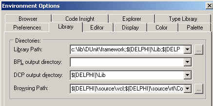
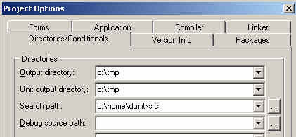

by Will Watts
edited by Juanco Añez
Copyright © 1999 Will Watts. All rights reserved.
Later versions are © 2000-2004 The DUnit Group. All rights
reserved.
This text may be distributed freely as long as it's reproduced in
its entirety.
A Ttraditional Chinese translation of this document can be found here
Introducing Unit Testing with DUnit
Archive contents
Getting started
Your first testing project
SetUp and TearDown
Test suites
Building suites step by stepRunning tests in console mode
Extensions
Third-Party Extensions
DUnit is a framework of classes designed to support the Xtreme approach to software testing. It supports Delphi 4 and later.
The idea is that, as you develop or change code, you develop appropriate verification tests at the same time, rather than postponing them to a later test phase. By keeping the tests up-to-date and re-applying them at regular intervals, it becomes easier to produce reliable code, and to be confident that alterations (and refactorings) do not break existing code. Applications become self-testing.
DUnit supplies classes that make it easy to organize and run these tests. DUnit provides two options for running the tests:
DUnit was originally inspired on the JUnit framework, designed by Kent Beck and Erich Gamma for the Java language, but the framework has already evolved into a more powerful tool, very specific to Delphi programming. The original Delphi port was done by Juanco Añez, and the framework is now maintained by the DUnit Group at SourceForge.
The DUnit distribution archive should be expanded into a directory of its own in a way so that its directory structure is preserved:
| Directory | Description | |||
|---|---|---|---|---|
| DUnit | ||||
| src | Library source | |||
| doc | Help file, home page and MPL license | |||
| images | Home page images | |||
| API | Time2Help generated API documentation | |||
| Contrib | Contributed modules. | |||
| XPGen | A tool for automatically generating test cases | |||
| tests | Test cases for the framework itself. | |||
| bin | Precompiled, standalone GUI test runner. | |||
| examples | ||||
| cmdline | Examples of how to invoke DUnit from the command line | |||
| collection | A Java-like collections implementation and its DUnit test cases | |||
| embeddable | Shows how to embed the GUITestRunner in another tool's forms. | |||
| registration | Using the test case registration system | |||
| registry | A step by step example of building a registry utility, with test cases | |||
| structure | Alternative ways to organize tests | |||
| diffunit | Placing test cases in their own units | |||
| sameunit | Placing test cases in the same unit as the tested code | |||
| testexception |
Shows two ways to test for expected
exceptions |
|||
| TListTest | Test cases for the Delphi Classes.TList object | |||
The src directory contains the
following files:
| File | Description |
|---|---|
| TestFramework.pas | The framework itself. |
| TestExtensions.pas | Decorator classes that may be used to extend test cases. |
| GUITesting.pas | Classes for testing user interfaces (Forms and Dialogs). |
| TextTestRunner.pas | Routines to run tests in console mode. |
| GUITestRunner.pas | The graphical user interface to the framework.. |
| GUITestRunner.dfm | The GUITestRunner Form |
The framework directory contains
precompiled versions of the above framework units, as well as a
Delphi .DCP package definition file that can be used to link the
library as a package (the corresponding .BPL file is in the
bin directory).
To write programs that use DUnit, either the source code or the
precompiled framework directories should be included in your unit
search path. You can do this by selecting Tools |
Environment Options | Library in the Delphi IDE, and
adding the DUnit path to the list of paths shown. For
example:

Alternatively, you can add the DUnit path to the default project options, or
to a specific project's options by selecting Project |
Options in the IDE:

Create a new application, and close the Unit1.pas that Delphi automatically generates
you without saving it. Save the new project (in 'real life' placed
in the same directory as the application that you wish to test)
giving it a name like
Project1Test.dpr.
Create a new (formless) unit with File | New |
Unit. This is the file that will contain the test
cases, so save it as something like Project1TestCases. In the
interface uses clause, add a reference to TestFramework.
Declare a class TTestCaseFirst derived
from TTestCase, and
implement a single method TestFirst as
shown below (obviously this is a very diddy example to get you
going). Note the initialization section at the bottom, which
registers the TTestCaseFirst class with
the DUnit
framework.
unit Project1TestCases;
interface
uses
TestFrameWork;
type
TTestCaseFirst = class(TTestCase)
published
procedure TestFirst;
end;
implementation
procedure TTestCaseFirst.TestFirst;
begin
Check(1 + 1 = 2, 'Catastrophic arithmetic failure!');
end;
initialization
TestFramework.RegisterTest(TTestCaseFirst.Suite);
end.
The results that are to be tested are placed in calls to the
Check method. Here
I am unimaginatively confirming that 1 + 1 is 2. The TestFramework.RegisterTest
procedure registers the given test in the frameworks test
registration system.
Now, before running the project, select the Project | View Source menu option to open the
project's source. Add TestFrameWork
and GUITestRunner to
the uses clause. Remove the default Application code, and replace
it with the code shown below:
program Project1Test;
uses
Forms,
TestFrameWork,
GUITestRunner,
Project1TestCases in 'Project1TestCases.pas';
{$R *.RES}
begin
Application.Initialize;
GUITestRunner.RunRegisteredTests;
end.
Now try running the program. If all goes well, you should see
the DUnit GUI,
complete with a tree display showing available tests (currently
only TestFirst). Clicking the Run
button runs the test. The GUI also allows you to enable and disable
parts of the test hierarchy by clicking on checkboxes, and has
extra buttons for conveniently selecting and deselecting tests, and
complete branches.
To add further tests, simply create new test methods in
TTestCaseFirst. The TTestCase.Suite
class method uses RTTI (RunTime Type Information) to find them and
call them automatically, provided the methods meet these two
conditions:
published.Note that DUnit builds a separate instance of the class for each method that it finds, so test methods cannot share instance data.
To add two more tests, TestSecond and
TestThird, declare the methods like
this:
TTestCaseFirst = class(TTestCase)
published
procedure TestFirst;
procedure TestSecond;
procedure TestThird;
end;
...
procedure TTestCaseFirst.TestSecond;
begin
Check(1 + 1 = 3, 'Deliberate failure');
end;
procedure TTestCaseFirst.TestThird;
var
i : Integer;
begin
i := 0;
Check(1 div i = i, 'Deliberate exception');
end;
If you rerun the program, you will see that
TestSecond fails (it has small magenta
box next to it), and TestThird threw an
exception (the box next to it is red). If any tests had succeeded
their boxes would have been green. Tests that are not run bear gray
boxes. The list of failed tests is reported in the pane bellow, and
the details for each of them can be seen in the bottom pane when
they are clicked.
If you are running the program from within the IDE, you may find
that the program halts when you hit an exception. This is probably
not the behavior that you want while using DUnit. You can disable
breaking on exceptions using the Tools |
Debugger Options | Language Exceptions dialog, and
un-checking the "Stop on Delphi
Exceptions" option.
One often needs to do some common preparation before running a
group of tests, and some tidying up afterwards. For example, when
testing a class, you might want to create an instance of that
class, run some checks on it, and finally free it. If you have a
lot of tests to make, you'll end up with repetitive code in each
test method. DUnit provides support for these situations through
the TTestCase virtual
methods SetUp and
TearDown, which
are called, respectively, before and after each test method is
executed. In Xtreme testing jargon, a prerequisite state like the
one provided by these two methods is known as a fixture.
The following example extends
TTestCaseFirst to do a couple of tests on
the Delphi collection class
TStringList:
interface
uses
TestFrameWork,
Classes; // needed for TStringList
type
TTestCaseFirst = class(TTestCase)
private
Fsl : TStringList;
protected
procedure SetUp; override;
procedure TearDown; override;
published
procedure TestFirst;
procedure TestSecond;
procedure TestThird;
procedure TestPopulateStringList;
procedure TestSortStringList;
end;
...
procedure TTestCaseFirst.SetUp;
begin
Fsl := TStringList.Create;
end;
procedure TTestCaseFirst.TearDown;
begin
Fsl.Free;
end;
procedure TTestCaseFirst.TestPopulateStringList;
var
i : Integer;
begin
Check(Fsl.Count = 0);
for i := 1 to 50 do // Iterate
Fsl.Add('i');
Check(Fsl.Count = 50);
end;
procedure TTestCaseFirst.TestSortStringList;
begin
Check(Fsl.Sorted = False);
Check(Fsl.Count = 0);
Fsl.Add('You');
Fsl.Add('Love');
Fsl.Add('I');
Fsl.Sorted := True;
Check(Fsl[2] = 'You');
Check(Fsl[1] = 'Love');
Check(Fsl[0] = 'I');
end;
When testing a non-trivial application, you will want to create
more than one class derived from TTestCase. To add
these as top-level nodes, you can simply register them in
initialization clauses, as was shown in the above example. Other
times, you may want to give more structure to your set of test
cases. For this purpose, DUnit supports the creation of test suites,
which are tests that can contain other tests, including other test
suites (it is an application of the Composite design
pattern).
As it stands in the TTestCaseFirst
test case, the SetUp and
TearDown methods are called uselessly
when the arithmetic testing methods run. The two methods that deal
with string lists would be better if separated into their own test
case. To do this, start by pulling apart
TTestCaseFirst into two classes,
TTestArithmetic and
TTestStringlist:
type
TTestArithmetic = class(TTestCase)
published
procedure TestFirst;
procedure TestSecond;
procedure TestThird;
end;
TTestStringlist = class(TTestCase)
private
Fsl : TStringList;
protected
procedure SetUp; override;
procedure TearDown; override;
published
procedure TestPopulateStringList;
procedure TestSortStringList;
end;
(Of course, you should update the method implementations too).
Now, change the unit's initialization code to read as follows:
RegisterTest('Simple suite', TTestArithmetic.Suite);
RegisterTest('Simple suite', TTestStringList.Suite);
The TestFramework
unit exposes the TTestSuite
class, the class that implements test suites, so you can
create test hierarchies using more explicit code:
The following function, UnitTests,
creates a test suite and adds the two test classes to it:
function UnitTests: ITestSuite;
var
ATestSuite: TTestSuite;
begin
ATestSuite := TTestSuite.create('Some trivial tests');
ATestSuite.addTest(TTestArithmetic.Suite);
ATestSuite.addTest(TTestStringlist.Suite);
Result := ATestSuite;
end;
Yet another way to implement the above function would be:
function UnitTests: ITestSuite;
begin
Result := TTestSuite.Create('Some trivial tests',
[
TTestArithmetic.Suite,
TTestStringlist.Suite
]);
end;
In the above example, the TTestSuite
constructor adds the tests in the passed array to the
suite.
You can register a test suite created in any of the above ways by using the same call you use to register individual test cases:
initialization
RegisterTest('Simple Test', UnitTests);
end.
When run with GUITestRunner,
you will see the new hierarchy.
Sometimes it is quite useful to be able run our test suites in a
console window, like when running them from within a Makefile. To
run tests in console mode, create a DPR file that uses
TextTestRunner
instead of GUITestRunner,
and add the compiler directive {$APPTYPE
CONSOLE} to the project file, or select
Project | Options | Linker | Generate console
appliation option in the IDE.
To run the example developed above as a console app, create Project1TestConsole.dpr as follows:
{$APPTYPE CONSOLE}
program Project1TestConsole;
uses
TestFrameWork,
TextTestRunner,
Project1TestCases in 'Project1TestCases.pas';
{$R *.RES}
begin
TextTestRunner.RunRegisteredTests;
end.
When the program is run, the output looks like this:
--
DUnit: Testing.
..F.E..
Time: 0.20
FAILURES!!!
Test Results:
Run: 5
Failures: 1
Errors: 1
There was 1 error:
1) TestThird: EDivByZero: Division by zero
There was 1 failure:
1) TestSecond
Notice the string '..F.E..'. Here the
framework has printed out a period for each test passed
successfully, an 'F' for tests that failed, and an 'E' for tests
that raised an exception.
You can make the TextTestRunner
halt the program with a non-zero exit code when failures are
encountered by passing a parameter with value rxbHaltOnFailures
, like this:
TextTestRunner.RunRegisteredTests(rxbHaltOnFailures);
Halting with a non-zero exit code becomes very useful when running test suites from within a Makefile.
The TextExtensions unit contains classes that extend the functionality of the DUnit framework. Most of the classes use the decorator pattern, as defined in the GoF (Gang of Four) "Patterns of Software Design" book.
TRepeatedTest
allows you to repeat the decorated test a number of times. For
example, to repeat the TestFirst test
case of TTestArithmetic 10 times, you
could write the following code:
uses
TestFrameWork,
TestExtensions, // needed for TRepeatedTest
Classes; // needed for TStringList
...
function UnitTests: ITest;
var
ATestArithmetic : TTestArithmetic;
begin
ATestArithmetic := TTestArithmetic.create('TestFirst');
Result := TRepeatedTest.Create(ATestArithmetic, 10);
end;
Notice the constructor for
TTestArithmetic.
ATestArithmetic := TTestArithmetic.create('TestFirst');
Here I have passed in the name of the test method that is to be repeated. Naturally it must be spelled correctly, or disappointment will follow shortly thereafter.
If you wanted to test all of the
TTestArithmetic methods repeatedly you
can stick them in a suite:
function UnitTests: ITest;
begin
Result := TRepeatedTest.Create(ATestArithmetic.Suite, 10);
end;
TTestSetup can be
used when you wish to set up state exactly once for a test case
class (the SetUp and
TearDown methods are called once for each
test method). For example, if you were writing a suite of tests to
exercise some database code, you might subclass TTestSetup
and use it to open and close the database before executing the
suite.
XPGen is a tool that automatically generates skeleton test cases for a given class. The tool can be found under the Contrib/XPGen directory in the DUnit distribution.
DUnitWizard is an open-sourced Delphi 5-7 plug-in for DUnit created by Paul Spain <paul at xpro dot con dot au>. The plug-in creates the skeleton code for DUnit projects and test cases, leaving you to concentrate on writing tests. If you would like to find out more or download visit http://xpro.com.au/Freeware/DUnitWizard.htm
DUnit homepage at SourceForge (https://sourceforge.net/projects/dunit/) Latest source, mailing lists, FAQs etc
Xtreme testing for Delphi programs ( http://www.suigeneris.org/juanca/writings/1999-11-29.html) Juancarlo Añez's introduction to his DUnit classes, originally published on the Borland Community website.
JUnit Test Infected: Programmers Love Writing Tests (http://www.junit.org/junit/doc/testinfected/testing.htm) A good article describing JUnit, the Java framework upon which DUnit is based.
Simple Smalltalk Testing: With Patterns (http://www.xprogramming.com/testfram.htm) Kent Beck's original paper. Hard going for non-Smalltalkers.
~o~